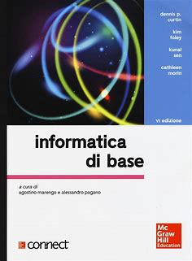

Capitolo 1
Cos'è l'informatica
L'informatica è la scienza che si occupa del trattamento di dati fruibili nell'informazione mediante procedure automatizzate.
Studia i fondamenti teorici dell'informazione, la sua computazione a livello logico e le tecniche pratiche per la sua
implementazione e applicazione in sistemi elettronici automatizzati.
È connessa con la logica matematica, l'automatica, l'elettronica e l'elettromeccanica
